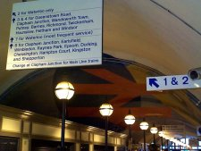

*DESTROYED 2002*
Former Location: Vauxhall, London [neighbourhood
street map]
This ingenious design was painted onto the long curved vault beneath the railway platforms. It consisted of four different anamorphic images, which needed to be viewed from four different locations, marked in the floor. The main image, which I illustrate here, is a version of the classic "bent stick" British Rail (BR) logo.
| This is the station entrance, on the Vauxhall Bridge side. The thing that we're looking for is partially visible behind the large sign hanging from the ceiling. You need to aim for the place indicated by the yellow arrow. |
|
| The point on the floor marked by the BR logo is where you need to stand. |
|
|  | "So what," you may be thinking, "this is just the BR logo." But, remember the actual shape of this vault. |
| The warping of the image... | |
| ... as you move towards it ... | |
| ... is very ... | |
| ... intriguing. | |
| The weird actual shape of the painted image can be appreciated from this "worm's eye view", drawn by William Pye, which is displayed on an explanatory wall panel close to the entrance barriers. |